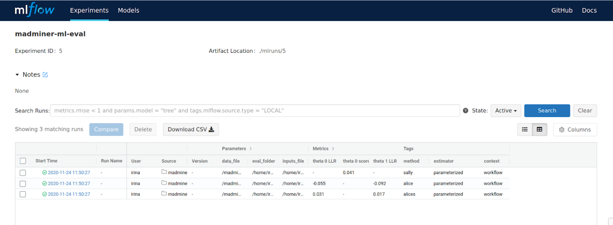

Setup REANA / MLFlow¶
The information below describes how to install and configure the software needed to run the workflow on REANA
Install REANA client¶
The reana-client package is an easy-to-install Python package that provides a Command Line Interface (CLI) for
submitting workflows to a REANA cluster. Normally, you would configure the workflow locally on your laptop or
some interactive node on a cluster and then use the reana-client CLI to submit the workflow to the REANA cluster.
To install reana-client simply type:
pip3 install reana-client
The official documentation and the README files of REANA repositories recommend creating a Python virtual environment to install this package. However, if your interaction with the project is going to be from a user perspective, this is not mandatory.
If you are running at CERN with lxplus, you do not even need to install the client, you can just type:
source /afs/cern.ch/user/r/reana/public/reana/bin/activate
Get access token¶
You will need access to a REANA server instance. You can find your authentication token within the REANA instance web interface. There is a REANA instance at CERN, but it requires a CERN user account. There is also one running at BNL, which was used for the demo video. Alternatively, you can also contact the system administrators for your university or lab to ask if they can deploy a REANA instance. For instance, we have set up a REANA instance on the NYU Greene cluster, which uses the SLURM backend to submit jobs.
Configure the client¶
Before submitting your workflows, you will need to set some environment variables in order for the reana-client CLI
to be able to connect with a REANA server instance.
export REANA_ACCESS_TOKEN=“<your access token here>”
export REANA_SERVER_URL=“<the REANA instance URL here>”
export REANA_WORKON=madminer-workflow
To determine if the connection is established check the following output:
reana-client ping
> REANA server: <REANA_URL_SERVER>
> REANA server version: 0.7.1
> REANA client version: 0.7.2
> Authenticated as: <username> <username@institution>
> Status: Connected
Optional: MLFlow¶
MLFlow is a framework that offers developers a consistent way of:
Defining ML projects.
Run parameterized experiments on those projects.
Track results, metrics and artifacts from run to run.

MLFlow has been integrated into the ML sub-workflow, in order to provide the third capability: the tracking of results and metrics on consecutive (but different) runs. Therefore, the following information applies only to the ML sub-workflow, leaving the Physics sub-workflow unaffected.
MLFlow tracking server¶
If you want to make Machine Learning metrics accessible through a web interface, you will need a MLFlow tracking server up and running.
This could be provided to you (usual case), or deployed by you at a network open address (such as the address 0.0.0.0 on your laptop).
To deploy your very own MLFlow tracking server:
# Install the Python package
pip3 install mlflow
# Launch the tracking server
mlflow server \
--host "0.0.0.0" \
--port 5000 \
--workers 2 \
--backend-store-uri "file:///tmp/mlflow/runs/metadata" \
--default-artifact-root "file:///tmp/mlflow/runs/artifacts"
MLFlow connection setup¶
Once you have a MLFlow tracking server instance up and running, you need to create the MLFlow experiments to which the workflow ML metrics will be associated to. To do it:
export MLFLOW_TRACKING_URI="<the tracking server URL here>"
mlflow experiments create --experiment-name "madminer-ml-sample"
mlflow experiments create --experiment-name "madminer-ml-train"
mlflow experiments create --experiment-name "madminer-ml-eval"
Now, you are ready to run the workflow with a properly configured MLFlow tracking server.
Using MLFlow with Yadage¶
In case the MLFlow tracking server is deployed locally in your computer, and you are planning to run the ML sub-workflow also locally using Yadage, the environment variables to set up are different:
# Independent of the OS
export MLFLOW_TRACKING_URI="http://host.docker.internal:5000"
# Only when using Linux
export PACKTIVITY_DOCKER_CMD_MOD="--add-host host.docker.internal:host-gateway"